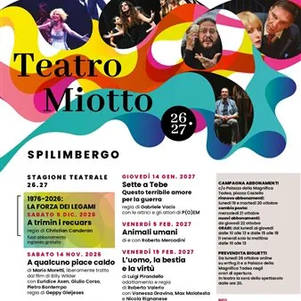

da sab 14 nov a sab 6 mar · dalle 20:45
Stagione teatrale 2026-2027
Si sta per aprire una nuova Stagione Teatrale al Teatro Cinema Miotto che vi accompagnerà da novembre fino a marzo 2027. Ecco il cartellone completo, consultabile anche sul sito del Comune di Spilimbergo: Sabato 14 novembre: A qualcuno piace caldo. Commedia di Mario Moretti…
 Indicazioni
Indicazioni
- Costi e prenotazioni
- Costo non indicato · Prenotazione non indicata
- Programma
- Programma da verificare. Apri la fonte ufficiale per orari e possibili aggiornamenti.
- In caso di maltempo
- Nessuna indicazione specifica pubblicata.
- Note
- Acquisito automaticamente dalla fonte.
L’EVENTO
Descrizione completa
Si sta per aprire una nuova Stagione Teatrale al Teatro Cinema Miotto che vi accompagnerà da novembre fino a marzo 2027. more Ecco il cartellone completo, consultabile anche sul sito del Comune di Spilimbergo: Sabato 14 novembre: A qualcuno piace caldo . Commedia di Mario Moretti liberamente tratta dal film di Billy Wilder. Lo spettacolo porta a teatro uno dei più celebri titoli della storia del cinema mantenendone lo spirito brillante e il fascino vintage. Sabato 5 dicembre: A trimin i recuars . Regia di Christian Canderan, un'appuntamento speciale nel segno del rapporto tra teatro e memoria del territorio nell'ambito delle iniziative ERT dedicate al 50° anniversario del terremoto del 1976. Domenica 6 dicembre: Tutti gli uomini che non sono . Spettacolo di e con Paolo Calabresi, tratto dall'omonimo libro dell'attore, che racconta la vera storia delle sue trasformazioni in personaggi celebri, da Nicolas Cage a Marilyn Manson e altre identità. Tra racconti e comicità, nasce una riflessione sul rapporto tra realtà e finzione e sulla ricerca della propria identità. Giovedì 14 gennaio: Sette a Tebe - Questo terribile amore per la guerra . Regia di Gabriele Vacis, spettacolo tratto da I sette contro Tebe di Eschilo in cui il mito classico diventa uno strumento per interrogare il presente sulle questioni più persistenti della storia umana. Venerdì 5 febbraio: Animali umani . Spettacolo di e con Roberto Mercadini che, partendo dalle domande su ciò che rende particolare la specie umana, costruisce una panoramica sorprendente, a tratti comica, sulle somiglianze tra l'uomo e gli altri animali. Venerdì 19 febbraio: L'uomo, la bestia e la virtù . Di Luigi Pirandello e dalla regia di Roberto Valerio. Lo spettacolo segue la vicenda del professor Paolino e della sua relazione clandestina con la signora Perella, rimasta incinta. Prende vita una tragicommedia fatta di equivoci e situazioni paradossali, in cui, dietro la comicità, emergono temi ancora attuali come l'ipocrisia e il rapporto tra uomo e donna. Sabato 6 marzo: Volevo fare il musicista . Spettacolo di e con Riccardo Rossi che, accompagnato da 9 musicisti, ripercorre il suo rapporto con la musica attraverso ricordi, aneddoti e incontri con alcune grandi icone della musica internazionale. Tutti gli spettacoli iniziano alle ore 20.45. more La prevendita biglietti parte lunedì 26 ottobre, online su ertfvg.it e a Palazzo della Magnifica Tadea negli orari di apertura. Si potranno acquistare anche in teatro la sera degli spettacoli dalle ore 20.00. Ingressi: intero 17 € - ridotto 15 € Per maggiori info su biglietti contattare l'Ufficio cultura tramite: 0427 591116 – cultura@comune.spilimbergo.pn.it.
IL PROGRAMMA
Programma e orari
Appuntamenti raccolti dalle fonti elencate. Dove manca un orario, non è ancora disponibile in questa scheda.
Programma pubblicato
- Dal 2026-11-14 al 2027-03-06
INFORMAZIONI UTILI
Prima di partire
- Controllare la fonte prima di partire.
ORGANIZZAZIONE